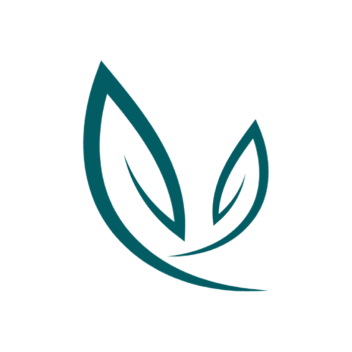
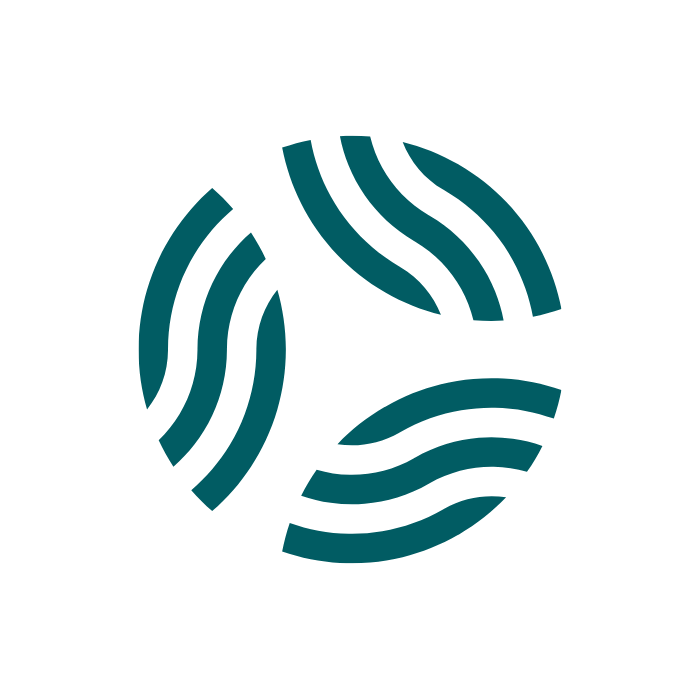
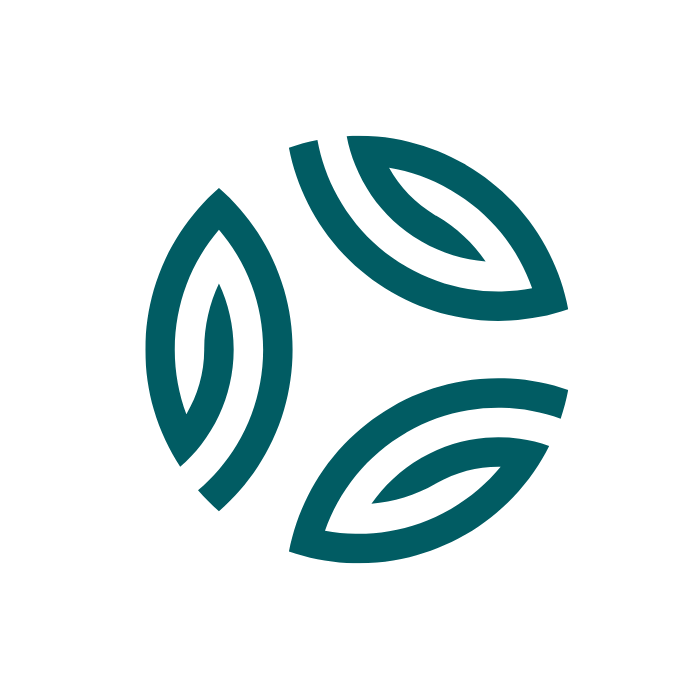
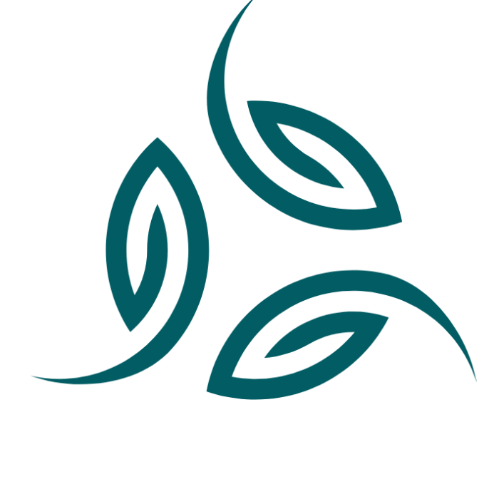

CykloSport Popelka
Web pro místní prodejnu a servis jízdních kol a elektrokol s poctivým přístupem.
cyklosportpopelka.czWebové stránky pro vaše podnikání, projekty a nápady s vaším autentickým otiskem.
Jaký může být váš web

Váš web může být KRÁSNÝ i PŘEHLEDNÝ.
Vyladěný a zároveň dokonale funkční.
Může nést vaši ENERGII i HODNOTY
a přitom jasně říkat, co a komu nabízíte.
Takové weby tvořím.
AUTENTICKÉ. SROZUMITELNÉ. PŘITAŽLIVÉ.
Komu svěřujete svůj web
Ahoj, jsem Anička a pomáhám ukázat světu, kdo opravdu jste a v čem jste dobří.
Protože jsou dokonalým spojením dvou světů. Technického a uměleckého.
Už ve škole jsem milovala jak matematiku, tak výtvarku. A když do toho později přišla informatika, bylo jasno.
Tehdy jsem si zvolila matematiku. Ale weby a jejich kouzlo mě stále přitahovaly.
Stačilo pár řádků v HTML a najednou se z prázdné obrazovky zrodila živá, krásná stránka. Tehdy mi to připadalo jako opravdový zázrak! 😄
Teprve časem jsem pochopila, že moje největší síla je právě v propojení těchto zdánlivě protichůdných oblastí.
Moji klienti oceňují, že jim nejen vytvořím funkční a spolehlivý web, ale také zachytím jejich jedinečnou energii a hodnoty.
A tak dnes tvořím weby z mé největší vášně, z harmonie mezi technickou a estetickou stránkou.
Přidanou hodnotou Harmonického webu je, že jasně a přirozeně promlouvá k vašim ideálním klientům.
Na doporučení jsem vyzkoušela kurz Webařce pod rukou od Magdalény Bouškové a naprosto mě oslnil.
Magda má skvěle vypracovaný systém, jak nejen webařit, ale i učit tvorbu webů.
Má kolem sebe krásnou komunitu inspirativních lidí, kterým umožňuje se neustále rozvíjet. S radostí je propojuje a dává jim prostor, kde každý může naplno projevit svůj talent.
Z jejích zkušeností a inspirace dnes čerpám i při tvorbě svých webů. Díky Magdi!
Co to bude obnášet
Společné naladění
Spojíme se a řeknete mi, co máte na srdci. Společně navrhneme řešení a vymyslíme, jak by mohl váš web vypadat. Poradím vám, jaké podklady budete potřebovat a jak je připravit a celým procesem vás srozumitelně provedu.
Cenová nabídka
Na základě rozsahu a velikosti webu připravím individuální cenovou nabídku. Po jejím odsouhlasení mi pošlete zálohu (1/2 z dohodnuté částky). Jakmile budete mít podklady připravené (nebo alespoň část), můžu začít tvořit.
Tvorba webu
Od chvíle, kdy mi dodáte vše potřebné, web vzniká přibližně 1 měsíc. Grafickou podobu budeme průběžně konzultovat, až doladíme všechny detaily. Po dokončení a odsouhlasení nás čeká finální vyúčtování.
Kolik web stojí

Malý web / webová vizitka
od 10 000 Kč
Jednoduchý a přehledný web, který vystihne podstatu vašeho podnikání. Může mít jednu stránku, nebo až 4 podstránky, např. úvod, služby, o mně a kontakt.
Autentický web je ideální start pro začínající podnikatele, kteří chtějí ukázat, co dělají, a mít svůj prostor na internetu. Bez složitostí, s důrazem na čistotu, přehlednost a autenticitu.

Střední web s více stránkami
od 20 000 Kč
Střední web, který nabízí prostor pro širší představení vašeho podnikání. Může zahrnovat blog, portfolio služeb nebo produktů, případně i jazykovou verzi.
Magnetický web je ideální pro ty, kteří chtějí svou práci představit do větší hloubky a přitom věcně a jasně. S důrazem na estetiku, strukturu a celkovou přitažlivost webu.

Velký a rozsáhlý web
od 30 000 Kč
Web s více než 10 stránkami pro komplexní prezentaci vašeho podnikání. Často zahrnuje také napojení na e-mailing, rezervační či fakturační systém.
Exkluzivní web je pro ty, kteří chtějí mít profesionální online zázemí, kde se propojuje design, funkčnost a technické možnosti. S důrazem na jedinečnost a podporu růstu vašeho podnikání.
Tvořím weby pro podnikatele, kteří mají co nabídnout a chtějí být vidět. Nejčastěji jsou to:
Pokud vaši profesi ve výčtu nevidíte, nevadí. Ozvěte se mi, ráda se na váš projekt podívám.
Každé řešení má své výhody a společně vybereme to pravé pro vás:
Pravidelná údržba zajistí, že váš web poběží spolehlivě a bez chyb. Zahrnuje:
Doporučuji ji provádět minimálně čtyřikrát ročně. Nemusíte na nic myslet, pohlídám to za vás. Cena jedné údržby je 500 Kč.
Jaké weby už vznikly
Web pro místní prodejnu a servis jízdních kol a elektrokol s poctivým přístupem.
cyklosportpopelka.cz

Proč si klienti vybírají mě
Na Aničku jsem se obrátila, když jsem potřebovala přesunout svůj web na jinou platformu. Navíc jsem se potřebovala trefit do časového okna mezi dvěma kampaněmi, takže celý přesun byl časově docela napnutý.
Anička odvedla perfektní práci. Krásně se trefila do mé představy vizuálu, web je funkční, přehledný a v pozadí mám vytvořené další stránky, které postupně naplním obsahem, až přijde jejich čas.
Moc si cením i Aniččiny jasné a transparentní komunikace a schopnosti srozumitelně vysvětlit technické věci i takové techno-lamě jako jsem já.
Vše klaplo podle plánu a nijak mi to nezdrželo plán kampaní. Rozhodně spolupráci doporučuji.
Potřeboval jsem vytvořit web, který bude kvůli mé činnosti opravdu osobitý a autentický.
Měl jsem velké štěstí, že jsem se dostal k Aničce. Jako webařka dokáže propojit intuici, výtvarné cítění i zdravý rozum, a právě tahle kombinace je podle mě pro tvorbu webu ideální.
Z mých textů vybrala to nejdůležitější, dala jim smysluplné flow a celé to nádherně barevně vyladila. Opravdu profesionální práce!
S Aničkou dlouhodobě spolupracuji na mých online projektech a prodejních stránkách.
Anička má naprosto unikátní schopnost vystihnout tu správnou esenci. Tu vibraci, kterou chcete na svém webu zachytit, a zároveň kterou potřebují vaši klienti vidět a cítit.
Její weby jsou nejen technicky naprosto precizní, ale i esteticky krásné a jedinečné v tom, že přesně ladí s potřebami klienta i jeho zákazníka, pro kterého jsou tvořeny.
Jsem s Aniččinou péčí nadmíru spokojená a její webovou tvorbu s radostí doporučuji.
Víc, než jen hezké stránky

Váš web bude jako magnet přitahovat přesně ty klienty, se kterými chcete pracovat. Klienty, kteří ocení vaši jedinečnost a hodnotu vašich služeb.
I když odpočíváte nebo pracujete s jinými klienty, váš web dál pracuje za vás. Buduje důvěru a přesvědčuje návštěvníky o vaší expertíze.
Můžete přestat donekonečna vysvětlovat, co přesně děláte a pro koho. Váš web to vysvětlí za vás. Jasně, přehledně a přesvědčivě.
V záplavě ostatních webů bude ten váš vyčnívat. Autentický, harmonický a přesně vystihující to, čím se lišíte a co vás dělá výjimečnými.
Pojďme do toho společně
A já vám s tím ráda pomůžu. Napište mi a domluvíme si krátké setkání online nebo osobně v Olomouci či okolí.
Těším se na vás!